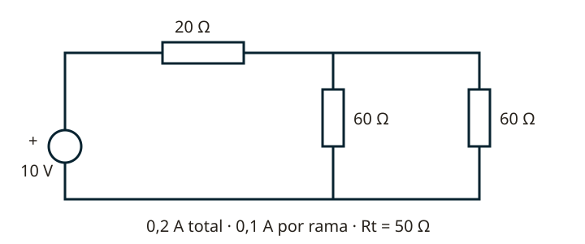

Lección 2 de 16
Electricidad: de la carga a los circuitos
Aprende las magnitudes, las unidades y un método para resolver resistencias, baterías y redes sin memorizar resultados.
Qué se mueve y por qué
El átomo tiene protones y neutrones en el núcleo y electrones alrededor. Los protones tienen carga positiva y los electrones negativa; cargas iguales se repelen y distintas se atraen. Los conductores tienen cargas móviles; los aislantes dificultan su movimiento. La corriente convencional va del potencial positivo al negativo; los electrones de un metal se desplazan en sentido contrario. Para corriente sostenida se necesita una fuente y un camino cerrado. La electricidad estática describe acumulación de carga; no equivale a una corriente permanente.
Tensión, corriente, resistencia, potencia y energía
La tensión V es energía por carga y se mide en voltios; la corriente I es carga por tiempo y se mide en amperios. La resistencia R se mide en ohmios y la conductancia G = 1/R, en siemens. La potencia P es energía por tiempo, en vatios; energía es potencia multiplicada por tiempo. En continua, P = VI. Para una resistencia óhmica, V = IR y P = I²R = V²/R. Una potencia de entrada de 30 W no implica 30 W de radiofrecuencia de salida: hay pérdidas.

Unidades y lectura de resistencias
Kilo equivale a 1.000; mega, a un millón; mili, a una milésima; micro, a una millonésima; nano, a una milmillonésima; pico, a una billonésima. Convierte antes de calcular. En una resistencia de cuatro bandas, las dos primeras son cifras, la tercera es multiplicador y la cuarta tolerancia. Las cifras negro, café, rojo, naranja, amarillo, verde, azul, violeta, gris y blanco corresponden a 0–9. Oro indica ±5% y plata ±10% como tolerancia. La potencia admisible debe cubrir la disipación con margen.
Serie, paralelo y redes mixtas
En serie circula la misma corriente y se suman resistencias. En paralelo hay la misma tensión y se suman conductancias: 1/Rt = 1/R1 + 1/R2. Para dos ramas, Rt = R1R2/(R1+R2). Una combinación paralela positiva queda por debajo de la menor resistencia. Reduce grupos sencillos, dibuja el equivalente y repite. Después vuelve al circuito original para calcular cada corriente y caída. Si una figura no puede reducirse así, plantea las ecuaciones de Kirchhoff.
Kirchhoff y fuentes
En un nodo, la suma de corrientes que entran iguala la que sale. En una malla, la suma algebraica de tensiones es cero. Escoge sentidos de referencia: un resultado negativo significa que el sentido real es el contrario. La potencia absorbida es positiva cuando la corriente entra por el terminal positivo del elemento; una fuente puede entregar o absorber energía. Pilas en serie suman tensión; en paralelo requieren compatibilidad y protección, no basta con unir bornes de baterías diferentes. La capacidad en Ah no es potencia.
Del valor al componente real
La resistencia de un conductor aumenta con su longitud y disminuye con su sección: R = ρl/A. La temperatura también influye. AWG es una escala de calibre: un número mayor suele representar un conductor más delgado. Elige cables por corriente, caída de tensión, temperatura y longitud. Los acumuladores almacenan energía química; un generador convierte energía mecánica en eléctrica mediante inducción. No confundas una fuente de tensión ideal con una batería real, que tiene resistencia interna y límites de corriente.
Resuelve paso a paso
Resolver una red mixta
Dos resistencias de 60 Ω en paralelo dan 30 Ω. En serie con 20 Ω, Rt = 50 Ω. Con 10 V: I = 10/50 = 0,2 A. Caen 4 V en 20 Ω y 6 V en el paralelo; cada rama de 60 Ω conduce 0,1 A. Las corrientes y tensiones vuelven a sumar.
Leer y dimensionar
Rojo–verde–café–oro: 25 × 10 = 250 Ω ±5%. Con 5 V: I = 20 mA y P = 0,1 W. El componente debe soportar esa disipación y las condiciones de montaje.
Comprueba lo aprendido: Una radio consume 2 A a 13,8 V durante 30 minutos. ¿Cuánta energía de entrada recibe?
P = 27,6 W. Tiempo = 0,5 h. Energía = 13,8 Wh; carga consumida ideal = 1 Ah. La autonomía real depende de batería, ciclo de transmisión y pérdidas.
Preguntas oficiales de este tema
Selecciona una alternativa y pulsa «Comprobar respuesta». Si fallas, podrás ver la respuesta correcta para seguir aprendiendo. Las preguntas con incidencias documentales se muestran solo para consulta y no se califican.
Continúa tu recorrido
Fuentes de estudio: programas técnicos y banco SUBTEL, apéndices A–E, versión 06/12/2020, y sus solucionarios oficiales. Reglamentación: Decreto 523, versión 21/06/2013; evaluación: Resolución Exenta 2620/2023. Revisión documental: 11/11/2026. Explicaciones, cálculos y esquemas didácticos de RUFCOM. Consultar documentos oficiales.